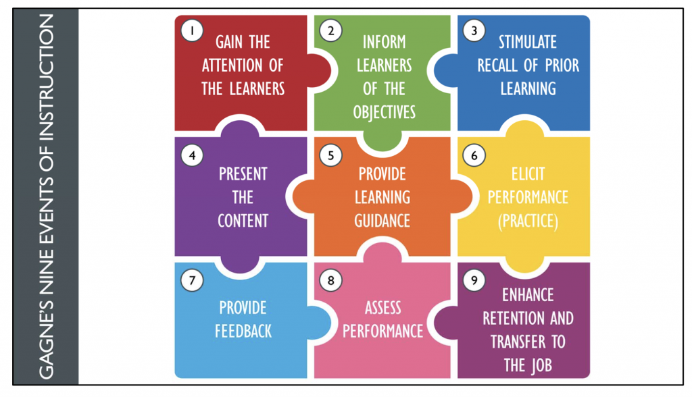
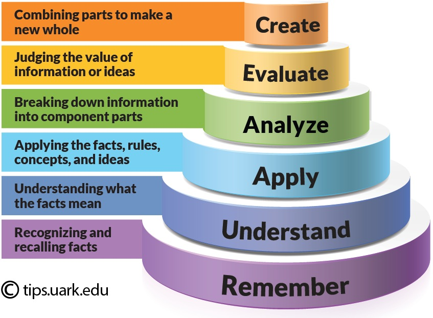

Design & Development
Instructional Design Models
ADDIE
A – Analysis D – Design D – Development I – Implementation E – Evaluation
- Developed in the 1970s for military training
- Iterative process with a focus on reflection
- Focused approach that allows for feedback rooted in continuous improvement
Image source: LearnUpon
Dick and Carey Model of Design
- Views instructional design as a system where context, content, learning, and instruction work together
- Focuses on the interrelationship between elements in the design process
- Executed iteratively and in parallel
.jpeg)
Image source: Penn State Instructional Designer's Handbook
Robert M. Gagné's Nine Events of Instruction
- Gagné's model is based on behaviorist and cognitivist learning
- This model specifies 9 steps that guide the learning process
- His model has been widely used in computer-based learning over the last 40 years

Image source: Educational Technology
Merrill's First Principles of Instruction
Overview of Dr. David Merrill's First Principles of Instruction:
Rapid e-Learning Design & Successive Approximation Model (SAM)
- Similar to Agile PM principles with iterative design and delivery
- Primary resource is the Subject Matter Expert (SME)
- Complete content available via PowerPoint or PDF
- Assessment with feedback and tracking capabilities
- e-Learning program can be completed in 1-2 hours
Image source: eLearning Industry
Backward Design Framework + Bloom's Taxonomy
Understanding by Design (UbD)
Wiggins and McTighe's Three Stages of UbD Framework
- Stage 1: Identify desired results
- Stage 2: Determine acceptable evidence
- Stage 3: Plan learning experiences and instruction
.jpg)
"UbD is a planning framework... what you're trying to do is make it more likely by design that when you teach, you're more goal-focused, more effective"
—Grant Wiggins
Source: Grant Wiggins-Understanding by Design (1 of 2)
Bloom's Taxonomy
- In 1956 Benjamin Bloom, et.al published a framework to categorize educational goals
- Most recognized and used framework for designing learning objectives
- Bloom's Taxonomy uses three learning domains: cognitive, affective, and psychomotor
- Each domain is assigned a hierarchy that corresponds to different levels of learning
- Lower levels are where simple and concrete learning occur
- Higher levels are where more complex and abstract learning occur

Image source: Montana State University